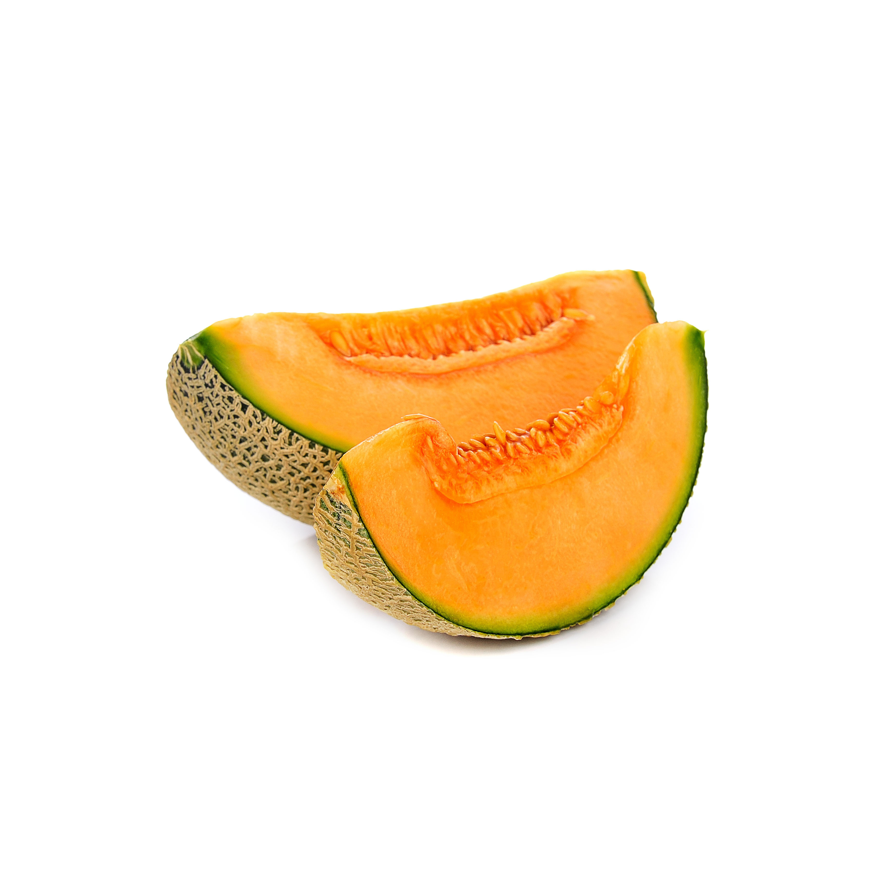
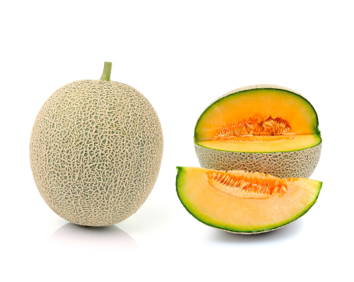
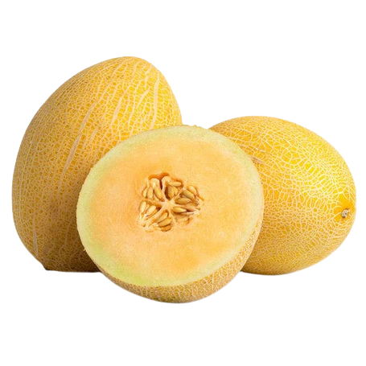
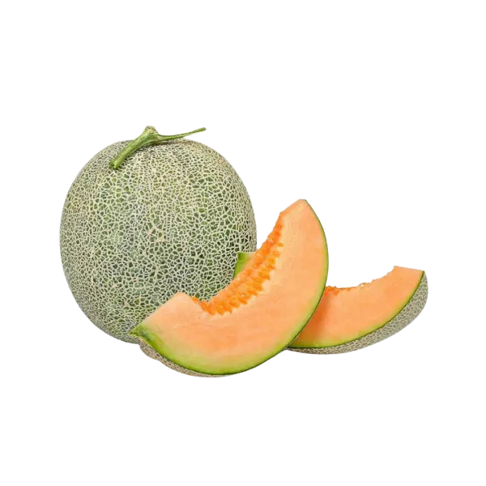
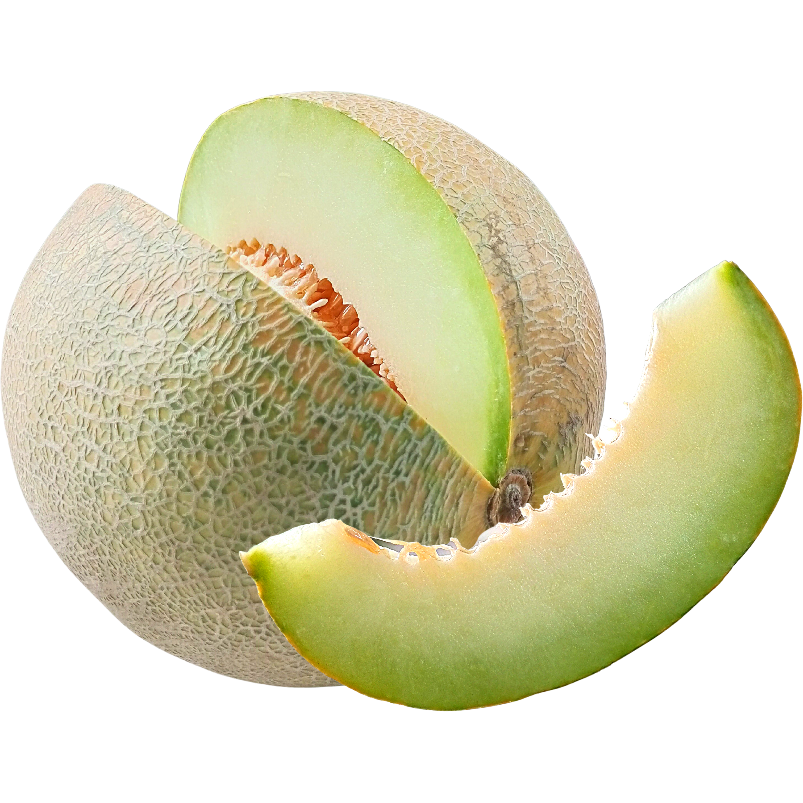
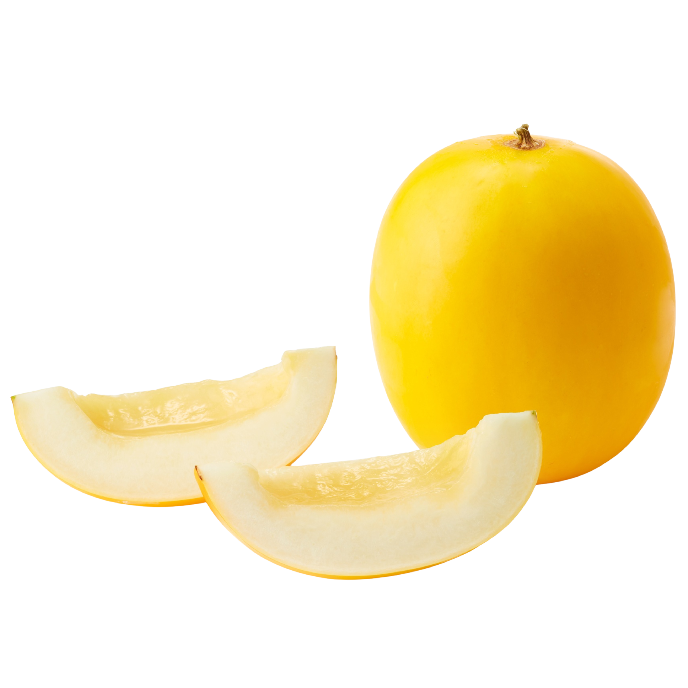
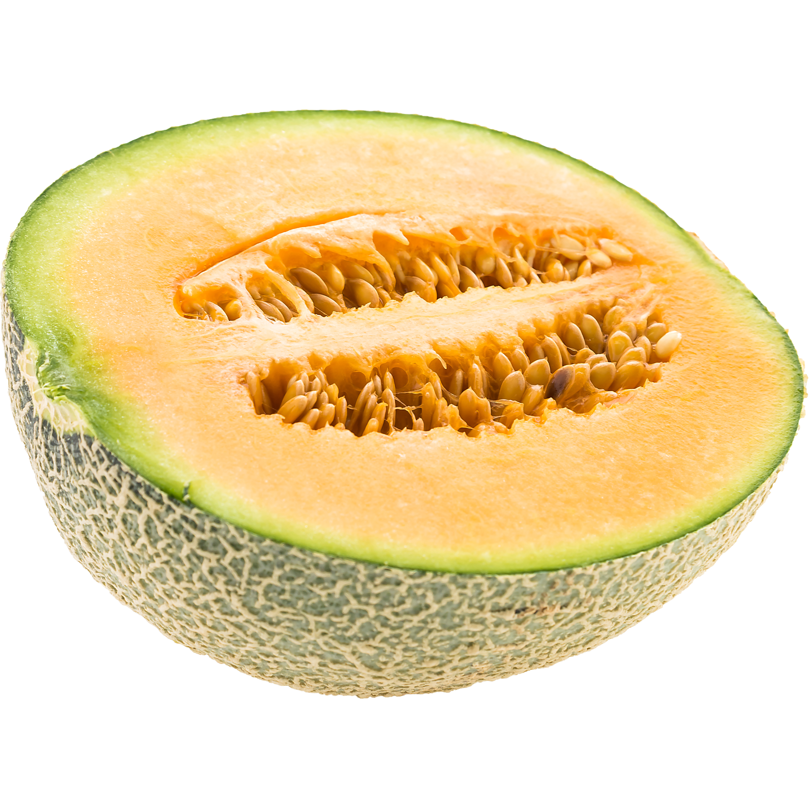
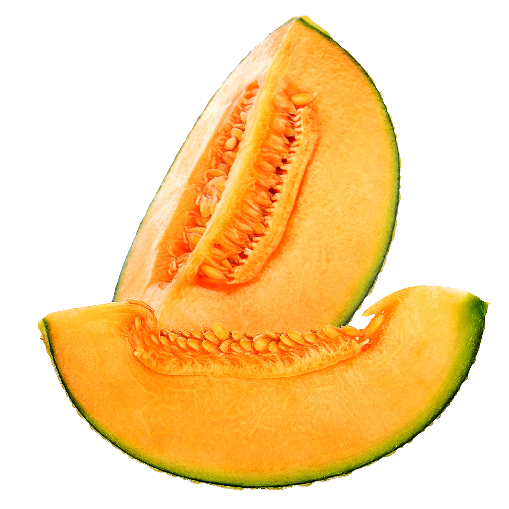
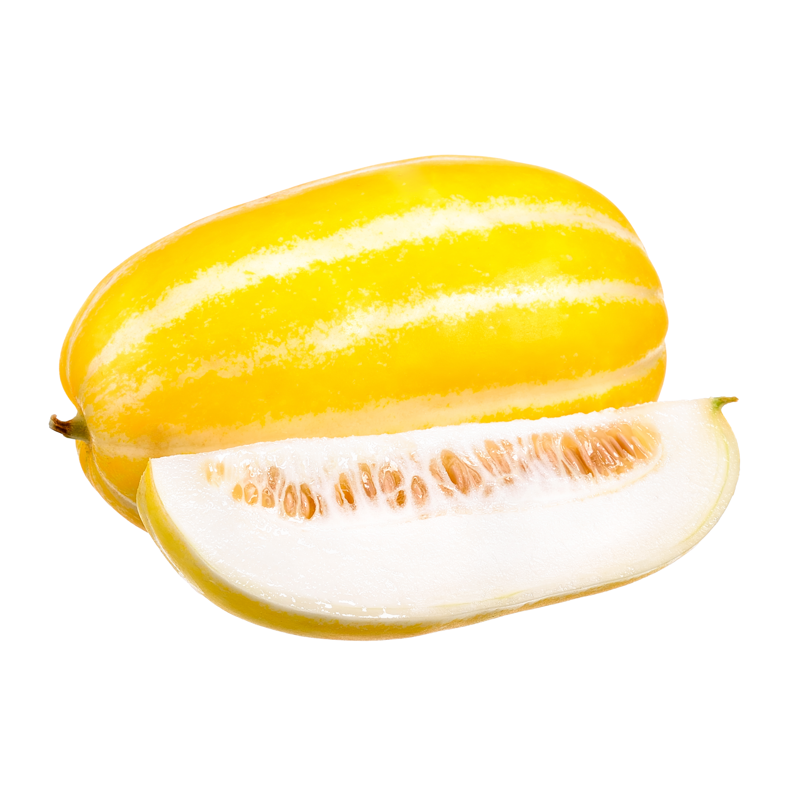

Sun Lady
Manis stabil untuk greenhouse skala kecil
Cantik dengan kulit kuning cerah dan daging putih krem yang lembut. Sangat pas untuk greenhouse kecil dengan tingkat kemanisan stabil di angka 12–15° Brix.

Cantik dengan kulit kuning cerah dan daging putih krem yang lembut. Sangat pas untuk greenhouse kecil dengan tingkat kemanisan stabil di angka 12–15° Brix.

Favorit petani hidroponik karena karakternya yang stabil dan produktif. Daging buahnya berwarna oranye kekuningan dengan aroma kuat serta rasa manis yang pekat.

Jenis hibrida yang tahan cuaca panas serta memiliki masa panen relatif cepat. Rasanya manis stabil dengan toleransi tinggi terhadap kelembapan lingkungan.

Pilihan tepat untuk siklus tanam konsisten dengan kulit kuning cerah yang menarik. Keunggulan utamanya adalah daya simpan lama serta daging buah yang renyah dan manis.

Primadona pasar premium yang dikenal dengan kulit berjaring dan kadar gula tinggi. Varietas berdaging oranye ini tumbuh sangat stabil pada media cocopeat.

Menawarkan sensasi rasa lembut dan sangat berair dengan daging berwarna hijau muda. Ukuran buahnya besar mencapai 2–3 kg, namun butuh kontrol kelembaban yang teliti.

Varietas asal Jepang ini memiliki tekstur sangat renyah dan manis. Sering digunakan pada proyek skala besar karena nilai jualnya yang premium.

Tampil memikat dengan daging oranye cerah dan rasa yang sangat manis. Performa tumbuhnya sangat andal untuk lahan komersial maupun demplot.

Dirancang khusus untuk memenuhi standar pasar high-end dengan kualitas buah prima. Sangat cocok diterapkan pada sistem irigasi tetes dan tahan penyakit akar.

Sangat digemari pasar Korea dan Asia karena aromanya yang kuat dan khas. Daging buahnya berwarna putih kehijauan dengan tekstur crunchy saat disantap.
Produk Akar memiliki rasa, tekstur dan kualitas yang menghasilkan hidangan lezat dan berkualitas.

Produk Digemari Seluruh Kalangan,
Termasuk Koki Pemenang Penghargaan
Hingga Koki Rumahan.

Hasil panen terbaik tanpa bergantung cuaca ketika Anda menanam di dalam ruangan. Kontrol kondisi tanaman dan pastikan sendiri pertumbuhan tanaman.
Panen dalam ruangan kami dirancang untuk menghasilkan 350X hasil panen per acre jika dibandingkan dengan pertanian konvensional.
Kami dapat menanam hasil yang sama dengan pertanian konvensional hanya dalam 1% dari area lahan yang biasanya dibutuhkan.